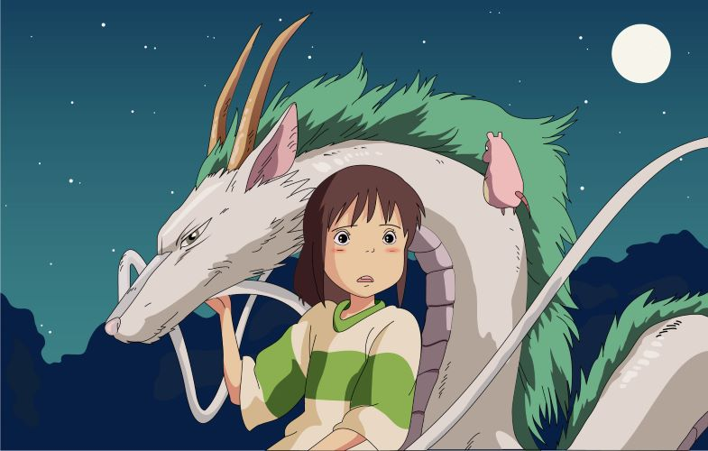
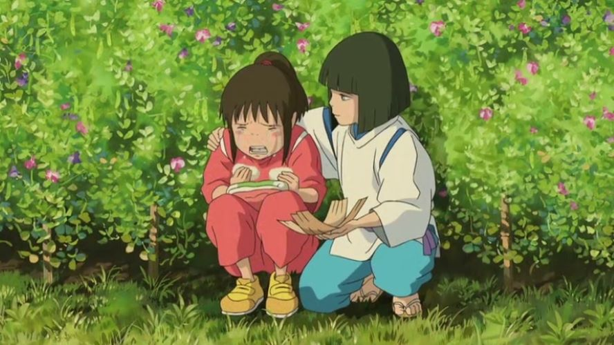
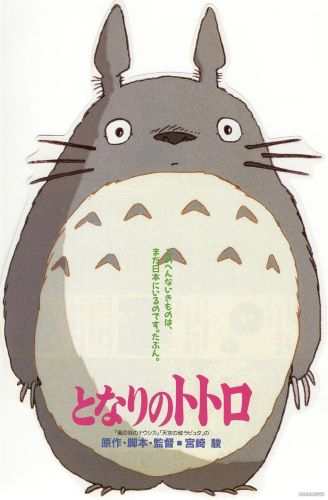
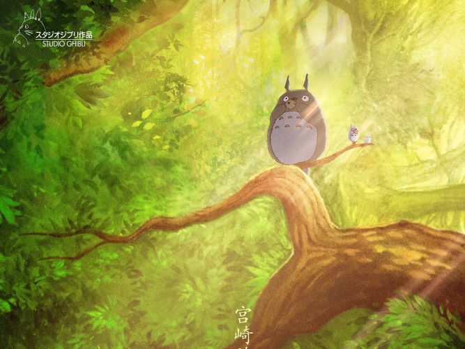
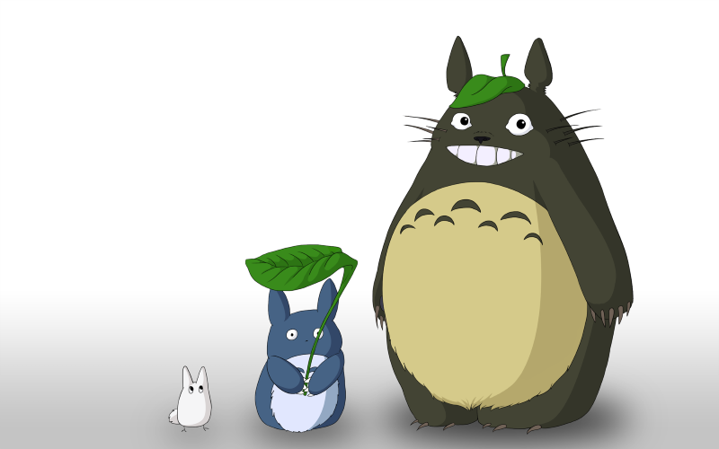
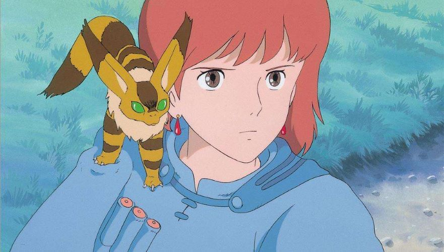
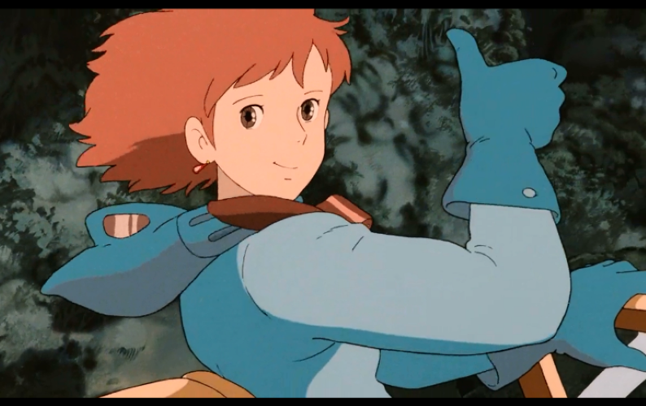

千与千寻
 有点娇气任性的10岁少女千寻（柊瑠美 配）跟随父母搬往新家，途中误入一座神庙，来到了另一个世界：一条专门给神仙提供服务的热闹非凡的浴场街。双亲因为吃了给神准备的美食而被变成了猪。千寻仓皇逃出，此时，一个叫白龙（入野自由 配）的男孩出现并救了她，在白帮助下千寻得以安身。
为了等待机会救出父母回到自己的世界，首先要为掌管镇中大浴场的魔女汤婆婆工作（夏木麻里 配），第二要被她剥夺名字，千寻便改名为“千”。在这里有指导她工作的小玲（玉井夕海 配）、负责煲洗澡水的锅炉爷爷（菅原文太 配）、煤炭屎鬼、以及入侵浴场捣乱的无脸男等，在大家的激励下，千寻以自己的纯真之心屡屡化险为夷，并交到了许多新朋友。最终，千寻拯救了白，发现了他的真实身份。然而要救出双亲，她还必须面临严酷的考验。
龙猫
  《龙猫》是吉卜力工作室与德间书店于1988年推出的动画电影，由宫崎骏所执导。片中憨态可掬的奇妙生物龙猫已经成为了吉卜力工作室乃至整个动画史中的经典形象，可以说是无人不知无人不晓。现在距离《龙猫》第一次与观众见面已经过去了整整30年，2018年12月14日他又将重新回归大荧幕，带着我们回到那个充满奇迹与幻想的世界。
《龙猫》的故事非常简单：大学教授草壁达郎和他的两个女儿五月、梅搬进了森林附近的一所旧房子，教授的妻子则在附近的医院养病。搬来新家的五月和梅遇见了各种奇妙的生物，像是小黑球模样的“煤黑子”，可以将外表变不见“小龙猫”、体型庞大但性格十分温顺的“大龙猫”、长着12条腿可以变身成交通工具的 “猫巴士”（ネコバス）……整部电影中没有险象跌生的刺激冒险，没有令人恐慌的反派角色。观众们跟随着主人公五月与梅的脚步，感受大自然的优美风光，乡间的恬静闲适，以及孩子眼中才能看见的美妙世界。
风之谷
 该片改编自宫崎骏的同名漫画，讲述千年后世界的产业文明达致巅峰后，经历一场称为“火之七日”的战争而毁于一旦。世界被一种由菌类构成，名叫腐海的新生态体系所掩盖，只有巨型昆虫能够适应其中，而人类们生活在仅存的小面积土地上，在面对巨型昆虫和会释放瘴气的腐海森林包围威胁下积极求存的故事。
1984年，该片在全日本公映时引起轰动，剧中独特的世界观以及人性价值观深刻地影响了其后十余年日本动画的走向，女主角娜乌西卡更是连续十年占据历代动画片最佳人气角色排行榜冠军之位。宫崎骏也因此片而奠定了他在全球动画界无可替代的地位，迪斯尼将他尊称为动画界的黑泽明。该片获得1985年每日电影奖·最佳影片。